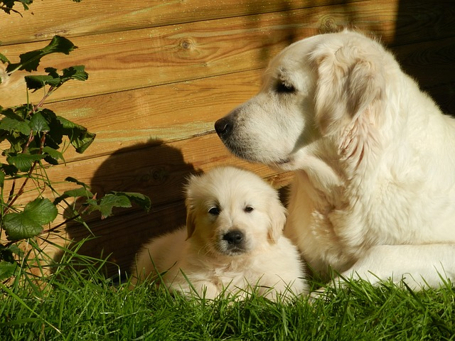

History of the Company
The Durham House of Pets is proud to be one of Durham's most renowned pet shops. Since our opening in 2010, founder Joe Sacco has this company rapidly expanding. Once a shop for strictly dog and cat food, Durham House of Pets is quickly becoming the one stop shop for all household pets.
Why Use Us?
At Durham House of Pets, we take the term, "pet shop", to a whole different level. Unlike any other store in the area, we offer uniqueness in the way that we take care of you and your pet. We create a family environment with our customers which is why we are expanding so rapidly. Located just off the UNH campus, it's a local and convenient spot to take care of everything you, and your pet might ever need.